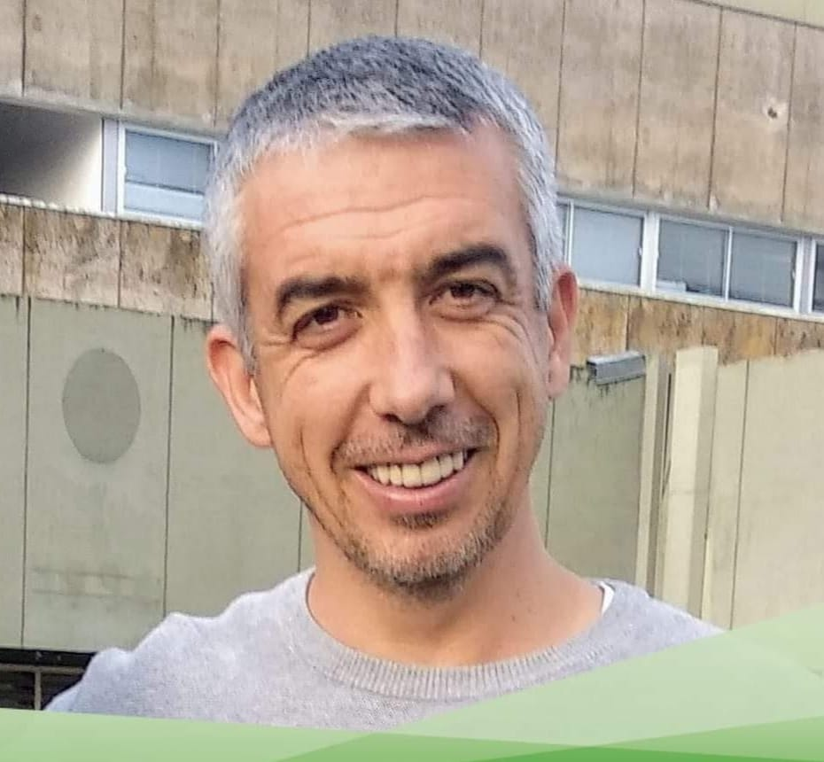

Pedro Herreros | WDD 130
Hi everybody! My name is Pedro, I`m studying Software development. I`m 45 and married with Virginia, we have 4 beautiful children. I`m a member of the church since 2012. I`m so happy to be the opportunity to study in BYU, it is a great blessing for me and my family. I was born in Valencia (Spain) but I live in Durazno (Uruguay). I love doing outdoor sports, traveling, spending time with my family, eating and cooking, learning all kinds of things, I like to watch good movies and series with my wife, I love going to the temple and doing family history, I would spend hours on Familysearch. I love studying, finances, politics and a good sense of humor. I am old-fashioned, I like to spend time with old people and learn from them and the wonderful values they have and that they can bring to us.